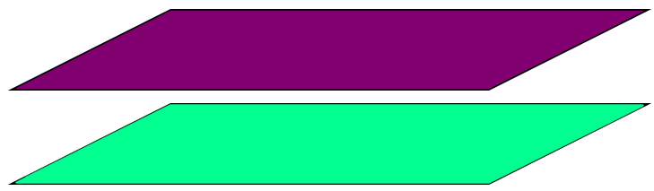
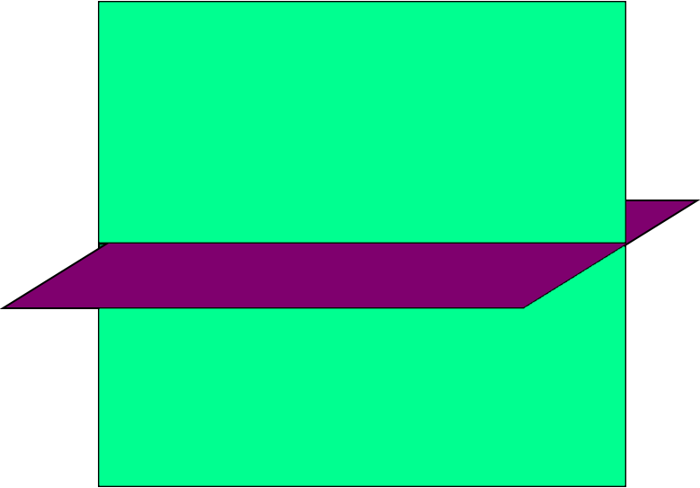
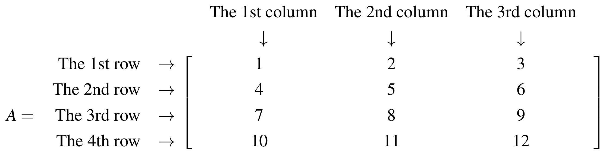

Introduction#
The following textbooks were used in preparations of the notes:
Kuttler, Kenneth. “A First Course in Linear Algebra (Lyryx).” (2021).
Nicholson, W. Keith. “Linear Algebra with Applications (Lyryx).” (2021).
Stewart, James, Daniel K. Clegg, and Saleem Watson. Calculus: early transcendentals. Cengage Learning, 2020.
Throughout Chapter 1 of the textbook, A First Course in Linear Algebra by K. Kuttler [KF17], there are several notations and terminologies that are introduced from Chapter 2 onwards. Therefore, in this prologue, we set the stage by briefly discussing some points of notation and terminology that will be used throughout this semester.
Equation#
In an equation, there is an equal sign (=), and the two sides of this equal sign are called equal. There is at least one unknown value which is known as a variable.
For example,
is a mathematical equation where \(x\) is a variable (an unknown value).
Planes#
A plane is a zero thickness surface with an infinitely large area.
We will discuss planes more in Chapter 4.
For two planes in three-dimensional space, we can have either parallel planes or intersecting planes.
The distance between parallel planes is always the same, and they never have any intersections.
{kind=link}
If two planes are not parallel (the distance between them is not always the same), they will have an intersection. The intersection of two planes always happens in the form of a line.
{kind=link}
A hyperplane is a plane with one less dimension than the dimension of its ambient space. For example, if space is 3-dimensional, then its hyperplanes are 2-dimensional planes. Moreover, if the space is 2-dimensional, its hyperplanes are the 1-dimensional lines.
Matrix#
Here is an example of a matrix with four rows and three columns:
{kind=link}
Each number from a matrix is called an element or an entry of the matrix. The elements (entries) in a matrix have indices that refer to their specific locations. For example, the upper left corner of the matrix is the first row (or simply, \textbf{row 1}) and the first column (or simply, \textbf{column 1}). The entry at row 1 and column 1 is 1. Similarly, the entry at row 4 and column 4 is 11.
A matrix with \(m\) rows and \(n\) columns is referred to as an \(m\times n\) matrix or as having size \(m\times n\). For example, \(A=\begin{bmatrix} 1 & 2 & 3 \\ 4 & 5 & 6 \\ 7 & 8 &9 \\ 10 & 11 & 12 \end{bmatrix}\) is a \(4\times 3\) matrix (it has four rows and three columns).
\(A\) matrix of size \(1\times n\) is called a row matrix (it just has a row), whereas one of size \(m\times1\) is called a column matrix (it has only a column). For example, \(\begin{bmatrix} 1 & 2 & 3\end{bmatrix}\) is a row matrix and \(\begin{bmatrix} 1 \\ 2 \\ 3\end{bmatrix}\) is a column matrix.
A square matrix has the same number of rows and columns. For example, \(\begin{bmatrix} 1 & 2 \\ 3 & 4 \end{bmatrix}\) and \(\begin{bmatrix} 1 & 2 & 3 \\ 4 & 5 & 6 \\ 7 & 8 &9\end{bmatrix}\) are \(2\times 2\) and \(3\times 3\) square matrices, respectively.
Scalar multiplication of matrices: If \(A\) is a matrix and \(k\) is a scalar (a scalar is just a number, such as \(2\), \(3\), \(\frac{5}{2}\),…), then \(kA\) is also a matrix whose entries are multiplied by \(k\). See the following examples:
\[\begin{split}\begin{aligned} 2\begin{bmatrix} 1 \\ 2 \\ 3\end{bmatrix}=\begin{bmatrix} (2)(1) \\ (2)(2) \\ (2)(3)\end{bmatrix} =\begin{bmatrix} 2 \\ 4 \\ 6\end{bmatrix} \quad \text{ and } \quad 2\begin{bmatrix} 1 & 2 \\ 3 & 4 \end{bmatrix}=\begin{bmatrix} (2)(1) & (2)(2) \\ (2)(3) & (2)(4) \end{bmatrix} =\begin{bmatrix} 2 & 4 \\ 6 & 8\end{bmatrix}.\end{aligned}\end{split}\]
- KF17
Kenneth Kuttler and Ilijas Farah. A First Course in Linear Algebra, 2017A version (Lyryx). Lyryx, 2017.